Креатиста
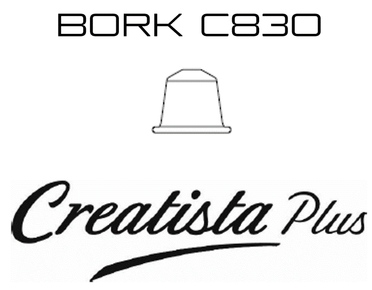 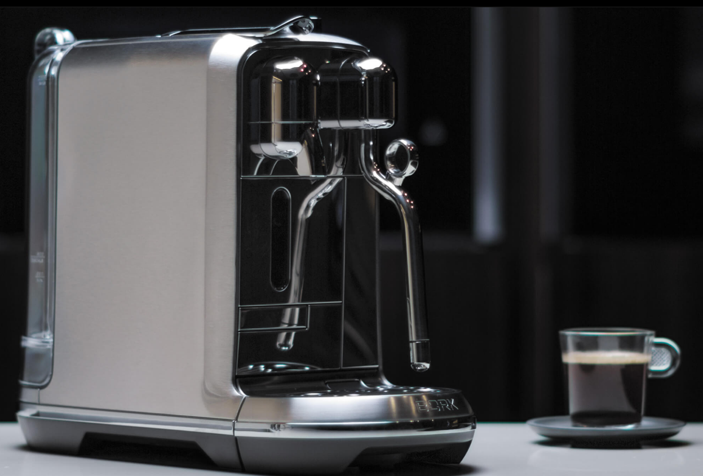 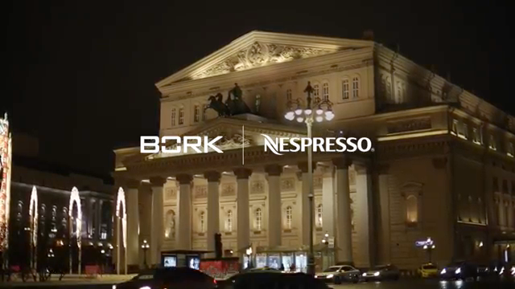 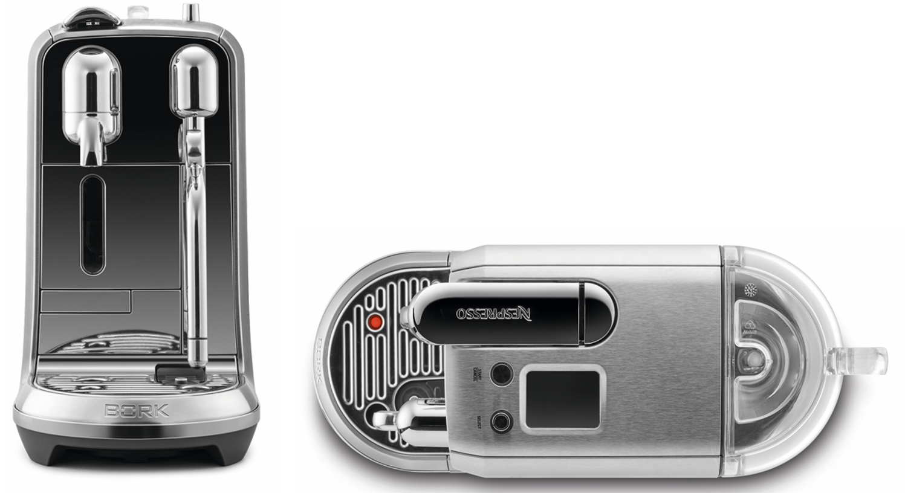Сочетание истинного вкуса, скорости и удобства.
Скорость и простота - технологии Nespresso. Запатентованный заварочный механизм с давлением 19 бар.
Вкус кофе - опыт и традиции Nespresso в производстве кофе от «зерна к чашке».
Впервые в мире в капсульной машине реализована инновационная автоматическая система вспенивания молока, которая позволяет получать молоко различной текстуры для создания Latte Art – первенство/новаторство BORK.
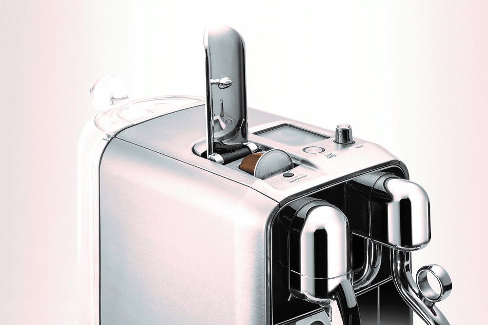Машина совместима только с капсулами Nespresso
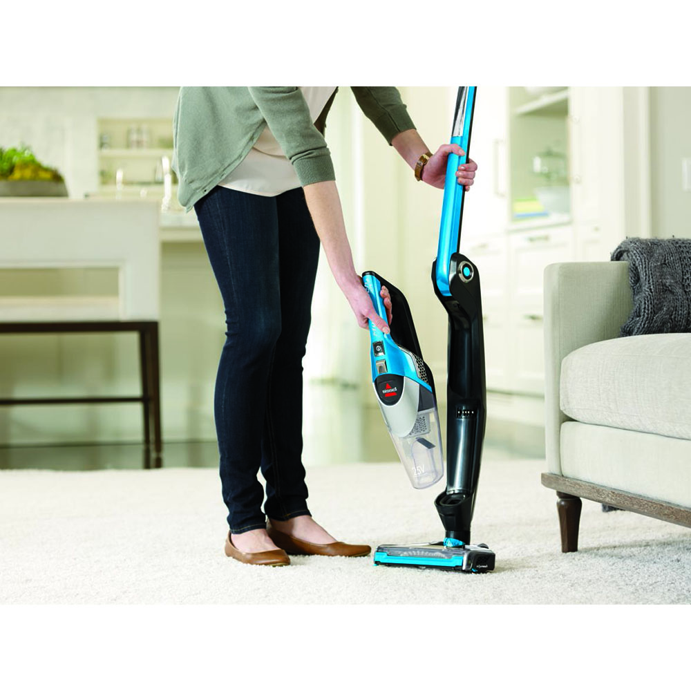Стальной корпус как символ надежности и стиля. Капсульная кофемашина BORK станет прекрасным дополнением к Вашей коллекции техники BORK
и впишется практически в любой интерьер.
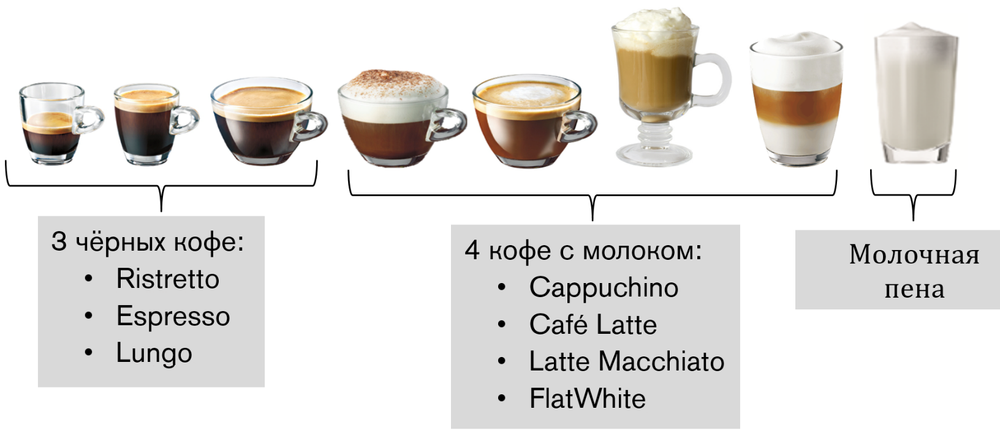Профессиональный бариста на вашей кухне
Насладитесь утренним капучино, классическим эспрессо или насыщенным итальянским ристретто после обеда, ароматным латте или знаменитым флэт уайт. Кофемашина BORK приготовит любой из самых популярных напитков, и каждый раз он будет совершенным.
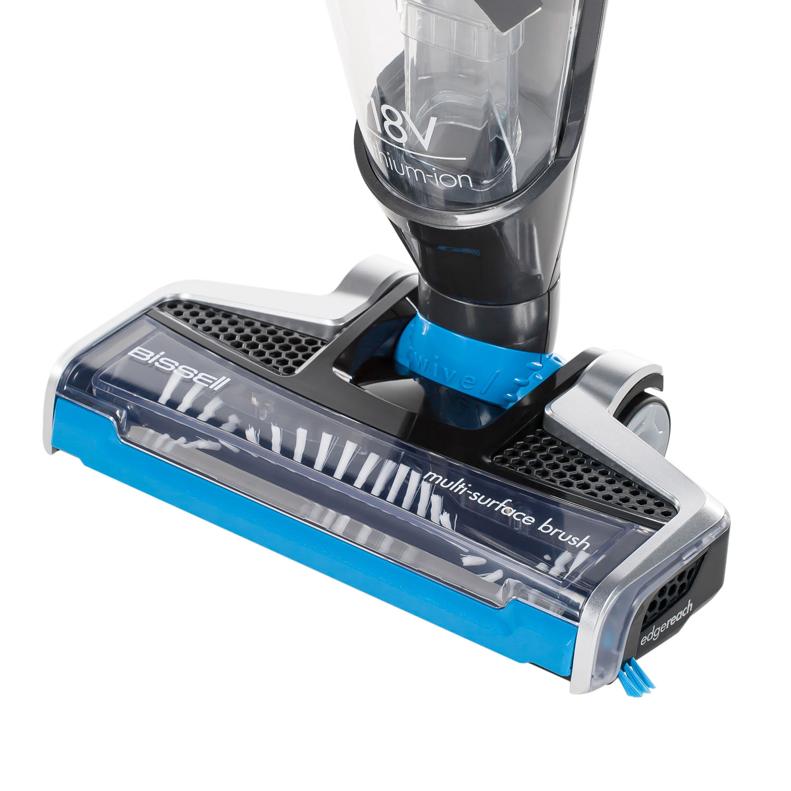Автоматическая система вспенивания
Благодаря температурному сенсору и многоступенчатой технологии взбивания молочной пены, капсульная кофемашина BORK C830 NESPRESSO
Creatista Plus способна приготовить молоко именно так, как это делают профессиональные бариста в лучших кофейнях мира.
Простая в использовании автоматическая/интеллектуальная система вспенивания молока включает:
- настройка температуры молока
- настройка плотности(текстуры) пенки для flat white, latte и cappuchino
- температурный сенсор
- быстрая самоочистка паровой трубки
Таким образом пользователь получает возможность создавать элементы Latte Art.
Для приготовления идеальной мелкоячеистой молочной пены используйте ультрапастеризованное молоко с жирностью не менее 3,5%.
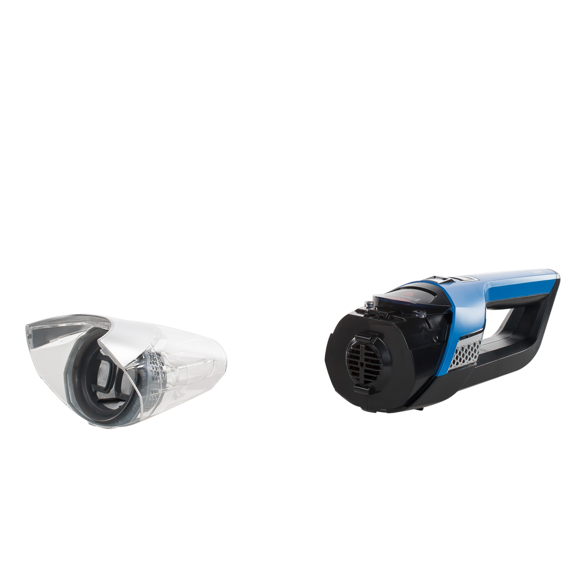Управление ONE TOUCH
Интуитивно понятный интерфейс и инновационная конструкция заварочного узла позволяют приготовить любимый напиток в считанные секунды.
Благодаря продвинутой интеллектуальной начинке и множеству датчиков устройство само напомнит вам о необходимости очистки контейнера для использованных капсул, пустом резервуаре для воды или промывке капучинатора.
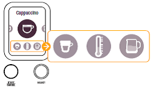Режим BARISTA
Настройки по умолчанию

Программирование черного кофе
- Ristretto: от 25 до 60 мл
- Espresso: от 25 до 60 мл
- Lungo: от 70 до 150 мл
Программирование кофе с молоком
- Объем кофе: от 25 до 60 мл
- Температура молока: от 56о до 76о (11 настроек)
- Объем молочной пены: от 2 до 30 мм (8 настроек)
Вы предпочитаете пить кофе погорячее в высокой кружке и с большим количеством пены? Все это можно изменить всего парой нажатий в меню настроек напитка. Впервые персонализация напитка стала настолько простой и понятной. Создайте свой уникальный рецепт с инновационной капсульной кофемашиной BORK C830 NESPRESSO Creatista Plus!
Периодичность декальцинации
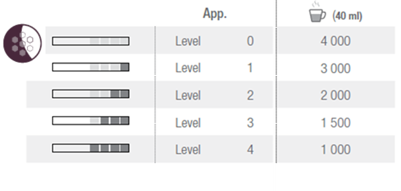Автоматизация обслуживания
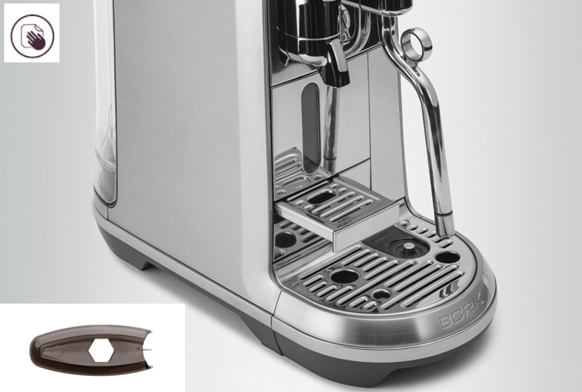Индивидуальная упаковка
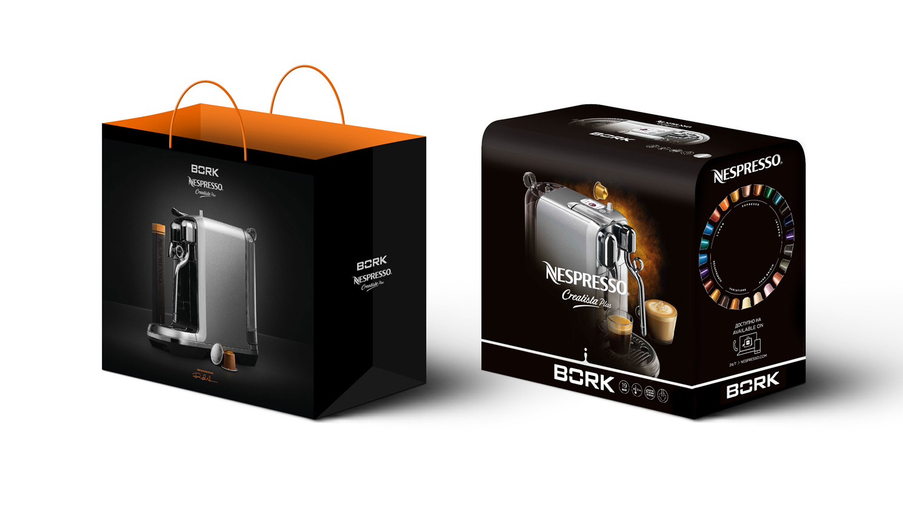Спецификации
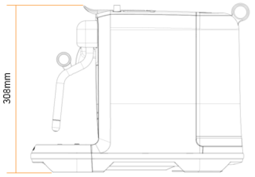 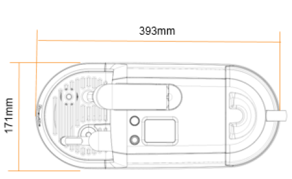Ключевые особенности
- 8 видов напитков: 3 черных кофе, 4 кофе с молоком, молочная пена
- Персонализация напитков – Режим BARISTA
- Простая в использовании автоматическая/интеллектуальная система вспенивания молока
- Кувшин для вспенивания молока (питчер бариста) в комплекте
- TFT дисплей с пошаговым гидом приготовления напитков и обслуживания машины
- Быстрый нагрев системы (керамический термоблок) - 3 секунды
- Запатентованный заварной механизм Nespresso с давлением 19 бар
- Стальной дизайн
- Управление ONE TOUCH
- Энергосберегающий режим
- Автоматизация обслуживания
- Установка степени жесткости воды
- Индикация декальцинации
- Сброс к заводским настройкам
- Функция опустошения гидросистемы